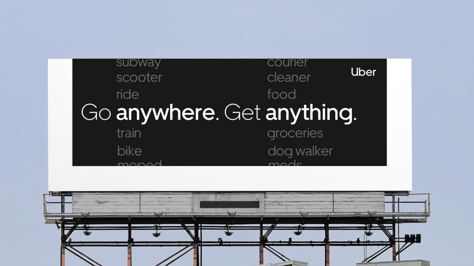
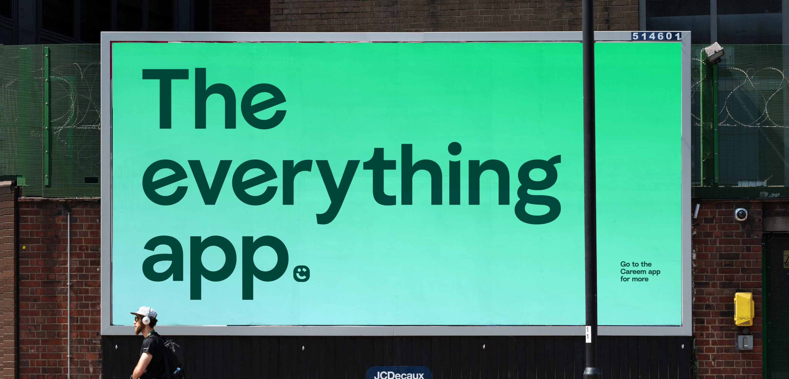

Pura moodboards
Two reference collections on the same problem: how a product with many services communicates that breadth in a single image, without reading as clutter or as burden.


App feature showcase
How a product with many services shows that breadth in one image. Containers, gestalts, metaphors, rings, exploded views and service grids, each judged against half a billboard.


Out of home
Billboards claiming breadth. Message on one side, the product on the other, read at roadside speed.
What the collections found
Across 80 feature showcases, the predictor of whether a visual survives a billboard is not how many services it shows. It is how it is drawn. Photographic treatments are 100% viable and 3D renders 86%, while flat vector diagrams manage 26%. Feature count barely moves the needle by comparison.
Every metaphor led direction scores 100%: an object that contains the offer, a shape composed of its parts, a miniature world, a replacement claim. The ring of labelled services, the most common structure and the one most people sketch first, scores 36%.
On billboards, the strongest breadth communication in the whole set contains no app screen at all: Uber's "Go anywhere. Get anything." flanked by two columns of service words. Careem, meanwhile, owns pure assertion locally with three words, "The everything app."
Every breadth demonstration found across both collections is commerce. None is health, which is the gap and the risk: a clinical service grid can read as a list of problems rather than a set of capabilities.